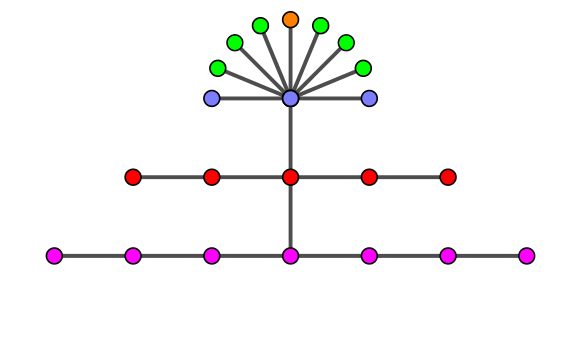

正当计算鸡们还沉浸在过年的气氛中时，计算鸡村拉响了警报：远方来了一群程序猿。"他们又要来了！" 全村上下陷入了惊恐。
看过了有手撕鬼子情节的抗日神剧的直径拆除鸡不禁开起了脑洞。作为一种神奇的生物，每个程序猿都长得十分古怪。人的身体形状可以抽象为一个五角星型的 $6$ 个结点的树，而程序猿则可以长成任意一个 $n$ 个结点的树。那么，如果每次能拆除这棵树的直径，最多要花费多少时间才能把这棵树全部删除呢？
具体来说，直径拆除鸡脑补的是这样一个算法：
计算次数即最后 $S$ 所存储的值。
现在，给定正整数 $n$，请你构造一个包含 $n$ 个结点的树，且计算次数尽可能的大。
共一行，包含一个正整数 $n$ ($n \leq 10000$)，表示树的点数。
输出 $n - 1$ 行，每行两个整数 $u, v$，表示树上一条从 $u$ 到 $v$ 的边，需要满足 $1 \leq u, v \leq n$。
先证明一个引理：对于一棵直径为 $D$ 的树，删除任意一条直径后，剩下所有树的直径不超过 $2 \left( \left \lfloor \dfrac D2 \right \rfloor - 1 \right)$。
设原树的直径为 $2k$ ($u \leadsto v$)，删掉后的直径为 $d$ ($x \leadsto y$)。由于原来的树是连通的，因此必存在 $w \in \left( u \leadsto v \right), z \in \left( x \leadsto y \right)$，$w$ 与 $z$ 连通。易知 $\max \left\{ \mathop{\mathrm{dist}} (u, w), \mathop{\mathrm{dist}} (v, w) \right\} \geq k$。
又 $\mathop{\mathrm{dist}} (w, z) \geq 1$，由于 $\max \left\{ \mathop{\mathrm{dist}} (u, w), \mathop{\mathrm{dist}} (v, w) \right\} + \mathop{\mathrm{dist}} (w, z) + \mathop{\mathrm{dist}} (z, x) \leq 2k$，从而必须有
$\mathop{\mathrm{dist}} (z, x) \leq k - 1$。同理有 $\mathop{\mathrm{dist}} (z, y) \leq k - 1$，故 $\mathop{\mathrm{dist}} (x, y) \leq 2k - 2$。
若直径为 $2k + 1$，则有 $\max \left\{ \mathop{\mathrm{dist}} (u, w), \mathop{\mathrm{dist}} (v, w) \right\} \geq k + 1$，类似讨论也可得到结论。
接下来再说明一个比较显然的结论：对于 $n$ 个节点的树，最大的计算次数一定不少于 $n$ 阶森林所对应的计算次数。证明略。
回到原题，首先我们考虑使用 DP 处理，用 $f_{i, j}$ 表示 $i$ 个节点的，直径为 $j$ 的树所能得到的最大的计算次数。如果不存在这样的树 ($i \leq j$ 或 $j \leq 1$)，定义 $f_{i, j} = i$。
考虑转移，对于 $f_{i, j}$，我们拉掉一条长度为 $j$ 的直径，于是还剩下 $i - j - 1$ 个点。由引理，剩下的树的直径不超过 $2 \left( \left \lfloor \dfrac j2 \right \rfloor - 1 \right)$，又容易证明这种情况是可以取到的，于是就有转移
$$ f_{i, j} = i + f_{i - j - 1, 2 \left( \left \lfloor j/2 \right \rfloor - 1 \right)} $$
可以发现 $f_{i, 2} = \begin{cases} i & i < 3 \\ 2 i - 3 & i \geq 3 \end{cases}$，且 $f_{i, 3} = \begin{cases} i & i < 4 \\ 2 i - 4 & i \geq 4 \end{cases}$。
于是由转移方程及数学归纳法知，每个 $f_{i, j}$ 都是关于 $i$ 的分段线性函数，且 $f_{i, 2j} \geq f_{i, 2j+1}$。
因此只需考虑直径为偶数的情况。
我们现在证明，当 $i$ 充分大时，有 $f_{i, 2j} = (j + 1) i - \dfrac {j (j + 1) (4j + 5)} 6 $。
证明可以归纳，即如果对 $n \leq j$ 时满足要求，$n = j + 1$ 时就有
\begin{align} f_{i, 2j+2} &= i + f_{i - 2j - 3, 2j} \\ &= i + (j + 1) (i - 2j - 3) - \dfrac {j (j + 1) (4j + 5)} 6 \\ &= (j + 2) i - \dfrac {j (j + 1) (4j + 5) + 6 (j + 1) (2j + 3)} 6 \\ &= (j + 2) i - \dfrac {(j + 1) (j + 2) (4j + 9)} 6 \end{align}
而且，可以求出，这个 "充分大" 的条件即为，$i \geq j (j + 2)$。而如果 $i < j (j + 2)$ 时，则有 $f_{i, 2j} > (j + 1) i - \dfrac {j (j + 1) (4j + 5)} 6$。
考虑对于每个 $i$，取寻找合适的 $j$，使得 $f_{i, 2j}$ 最大。
将 $f_{i, 2j}$ 看成关于 $j$ 的函数，即令 $F_i (x) = i (x + 1) - \dfrac {x (x + 1) (4x + 5)} 6$，将 $F_i$ 对 $x$ 作差分，则有
$$ \Delta F_i (x) = F_i (x) - F_i (x - 1) = i - x (2 x + 1) $$
因此有：当 $i = x (2 x + 1)$ 时，$F_i (x) = F_i (x - 1)$；当 $i > x (2 x + 1)$ 时，$F_i (x) > F_i (x - 1)$；当 $i < x (2 x + 1)$ 时，有 $F_i (x) < F_i (x - 1)$。
故当 $x (2 x + 1) \leq i \leq (x + 1) (2 x + 3)$ 时，取 $j = x$ 时答案最优，此时，$i \geq j (2 j + 1) \geq j (j + 2)$，故此时它就等于 $f_{i, 2j}$。
因此对 (题目中) 指定的 $n$，我们可以取 $j = \left \lfloor \dfrac {\sqrt {8 n + 1} - 1} 4 \right \rfloor$，这样所算出来的 $f_{n, 2 j} = (j + 1) n - \dfrac {j (j + 1) (4j + 5)} 6$ 就是最优解的值。
接下来就是要给出构造啦。由定义，这张图的直径为 $2 j$；由 DP 的过程，删掉这条直径后，剩下的图应该是一个直径为 $2 j - 2$ 的树，以此类推……
最后多余的点就放到直径为 $2$ 的子图的中点即可，即像一个 "菊花金字塔" 形状，如下图所示：
删除的时候从下往上删即可达到最大值。时间复杂度 $O(n)$。
#include <bits/stdc++.h>
#define link(x, y) printf("%d %d\n", x, y)
int main() {
int n, c, i, j = 1, k, l = 0;
scanf("%d", &n);
if (n <= 3) {for (i = 2; i <= n; ++i) link(1, i); return 0;}
c = ((int)sqrt(n << 3) - 1) >> 2;
for (i = c; ~i; --i, j = k + 1) {
l ? link(l, j + i) : 0; l = j + i;
for (k = j; k < j + 2 * i; ++k) link(k, k + 1);
}
for (; j <= n; ++j) link(l - 2, j);
return 0;
}
坑1：注意特判 $n < 3$ 的情况，此时直径 $\leq 2$。
坑2：由于一棵树可能有多个直径，所以需要选择直径的顺序，题目中是先选择一端最小的，再选择另一端最小的。因此构造时需要把先删的点的编号设成最小，然后依此类推。